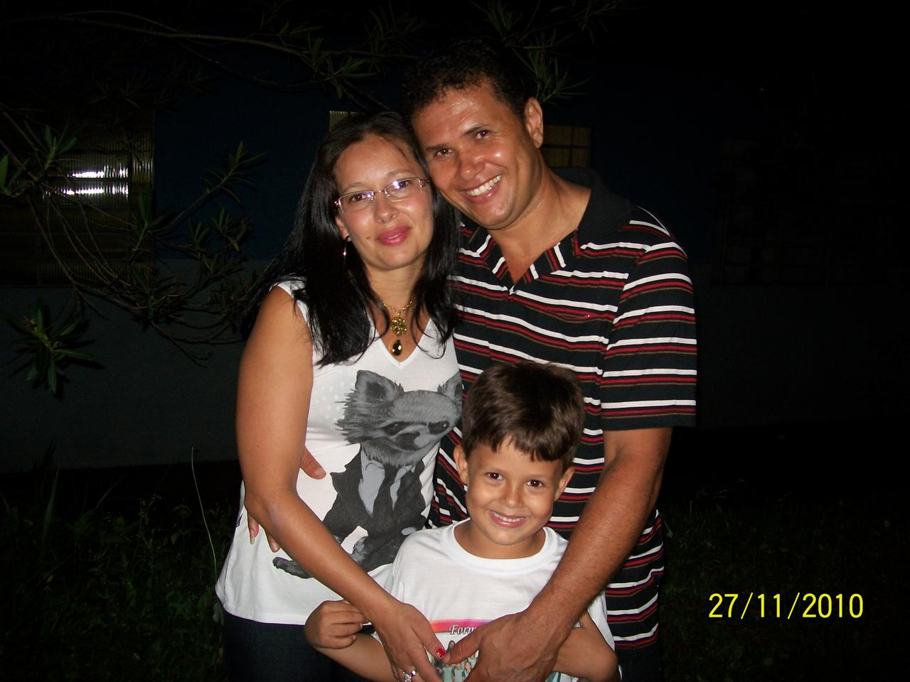
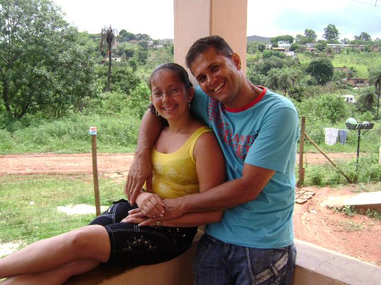
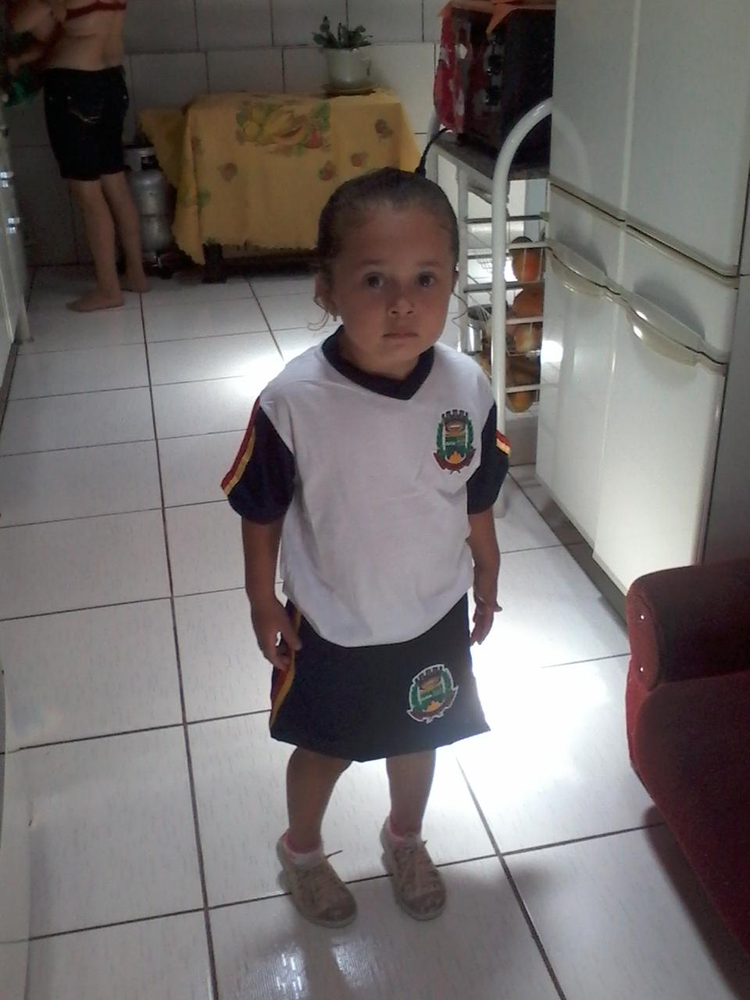
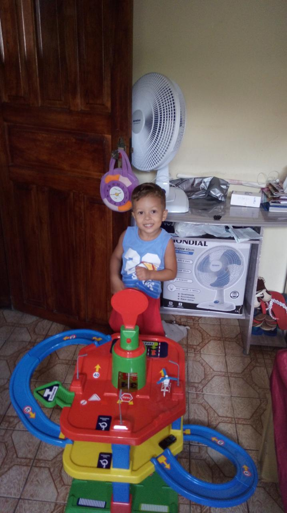

Minha mãe
Minha mãe é, sem dúvida, o coração pulsante da nossa família. Ela é aquela que faz o impossível parecer fácil, sempre colocando nosso bem-estar acima de qualquer coisa. O jeito dela de cuidar de nós vai muito além das palavras – está nos pequenos gestos, nas noites sem dormir e na força que encontra, mesmo quando está cansada. É como se cada abraço dela carregasse uma energia que cura, acolhe e fortalece. Quando penso em bondade, é nela que penso primeiro.
Meu pai
Meu pai é o alicerce que sustenta nossa família. Ele sempre trabalhou duro para garantir que nunca nos faltasse nada e, ao mesmo tempo, nos ensinou valores como honestidade, respeito e perseverança. Ele é aquele que me desafia a ser melhor a cada dia, mas também é o primeiro a celebrar minhas conquistas, mesmo as mais simples. Apesar do jeito firme, ele tem um carinho imenso por nós e sempre encontra uma forma de demonstrar isso.
minha irma
Minha irmã do meio é uma das pessoas mais determinadas que conheço. Ela tem um jeito teimoso (bem típico de irmãos, né?), mas é cheia de coragem e autenticidade. Compartilhamos muitas risadas e até algumas discussões, mas sei que, no fundo, ela sempre estará do meu lado, assim como eu estarei do lado dela. Ela traz alegria e energia para nossa família, e admiro muito como ela enfrenta os desafios da vida com tanta força.
Meu irmao
Meu irmão mais novo é a alegria da casa. Ele tem um jeito leve e descontraído de encarar a vida, o que muitas vezes me ensina a não levar as coisas tão a sério. É incrível como ele consegue transformar qualquer momento em algo divertido. Apesar de ser o caçula, ele é esperto e tem um jeito especial de nos fazer sorrir mesmo nos dias mais difíceis.